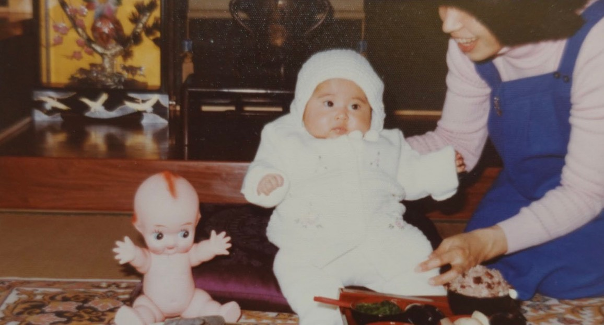
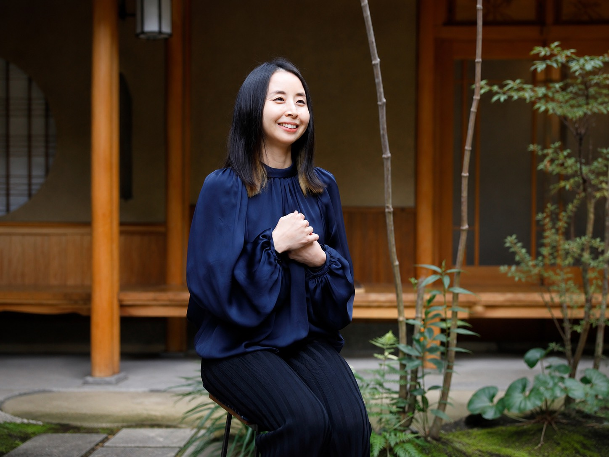
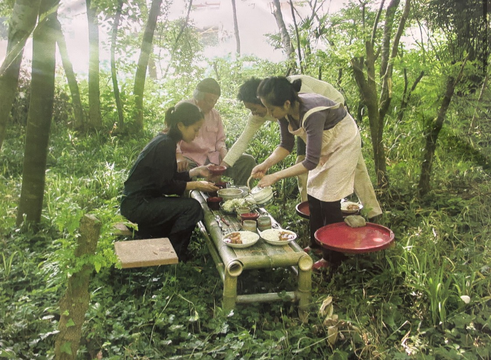
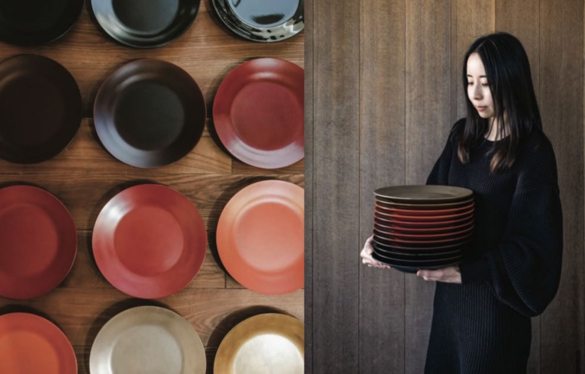

01
奈良で育った感性

戸田蓉子は奈良に生まれた。 幼い頃から春日大社の写生会に参加し、目の前にある景色や色を観察しながら、 自分の手で色を混ぜて作り出すことに親しんできた。
春日大社の朱色の鳥居、古い建物、自然の中にある静かな美しさ。 幼少期に触れた奈良の風景は、後の表現にもつながる原点となっている。
Toda Yohko

戸田蓉子は、漆をただの伝統工芸の素材としてではなく、 人の身体感覚や記憶、生活とつながる存在として見つめている。 その表現は、奈良で育った感性、芸術との出会い、異文化の経験、 そして漆と向き合い続けた時間の積み重ねから生まれている。
01

戸田蓉子は奈良に生まれた。 幼い頃から春日大社の写生会に参加し、目の前にある景色や色を観察しながら、 自分の手で色を混ぜて作り出すことに親しんできた。
春日大社の朱色の鳥居、古い建物、自然の中にある静かな美しさ。 幼少期に触れた奈良の風景は、後の表現にもつながる原点となっている。
02
中学から同志社女子に通い、高校時代には大きな失恋を経験する。 その出来事をきっかけに、感情を絵や作品として表現する人がいることを知った。
ゴーギャンの作品などに触れ、芸術は単に美しいものではなく、 人の感情や存在そのものを映し出すものだと感じるようになる。
03
大学では、同志社大学の美学及び芸術学専攻に進学した。 作品を見て分析し、それを言葉にすることに強く惹かれていく。
一方で、内部進学による学力コンプレックスや、周囲に合わせることへの苦しさも抱えていた。 インプットしてもアウトプットできないもどかしさ、 作品を作る前に言葉が先に走ってしまう感覚。 その葛藤の中で、表現とは何かを探り続けた。
04
大学時代、パリでの経験を通して、戸田は異文化に触れる喜びを知る。 アルメニア人との出会いから、自分の知らない文化や価値観に触れられることの面白さを感じた。
また、「日本ではどうなの？」と問われる中で、 自分自身が日本文化とどう向き合うのかを意識するようになる。 この経験は、のちに漆という素材へ向かうきっかけの一つとなった。
05
テキスタイルアートやアイリーン・グレイの作品を通して、戸田は漆と出会う。 漆の黒い艶、静かな強さ、身体や生活を包み込むような存在感に惹かれていった。
戸田にとって漆は、ただものの表面を美しく飾る素材ではない。 人ともの、生活と芸術、日本文化と現代をつなぐ存在である。
06

漆を学ぶため、滋賀県の先生の工房に通い始める。 週に一度、夜行バスで通いながら修行を重ねた。
しかし、そこでは実技へのコンプレックスにも向き合うことになる。 技術が足りず、頭の中でイメージしたものが形にならない。 自分の作ったものが気持ち悪く感じられ、作品を客観視できない苦しさもあった。
それでも漆と向き合い続ける中で、素材の力を信じる姿勢が少しずつ形になっていった。
07
修行を経て、戸田は独立する。 彼女が大切にしているのは、漆を遠い伝統工芸としてではなく、 人の生活や身体に近いものとして届けることだ。
「包み込む器」という考え方には、漆の本質が表れている。 漆はものを守り、包み、時間とともに深みを増していく。 その存在は、人の記憶や身体感覚にも静かに寄り添う。
08
戸田の作品は、シンプルであるほど強さを増していく。 余計なものを削ぎ落とし、形、質感、光、触れたときの感覚を丁寧に磨き上げる。
細部をどれだけ考え抜き、どれだけ磨き上げるか。 その積み重ねによって、漆が持つ本来の美しさが静かに立ち上がる。
09

戸田蓉子は、自らを「漆の媒介者」として捉えている。 漆という素材の魅力を、現代の生活や感覚の中へとつなぎ直すこと。 それが彼女の制作の軸である。
漆は、ただ塗るものではない。 人を包み込み、記憶を宿し、生活の中で静かに生き続けるもの。 戸田蓉子の作品は、その漆の力を私たちに伝えている。
漆は、ただ塗るものではない。
人を包み込み、記憶を宿し、
生活の中で静かに生き続ける。